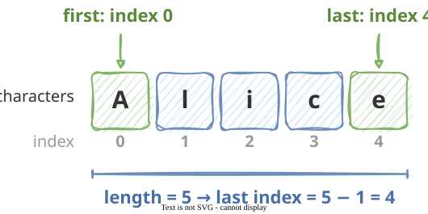
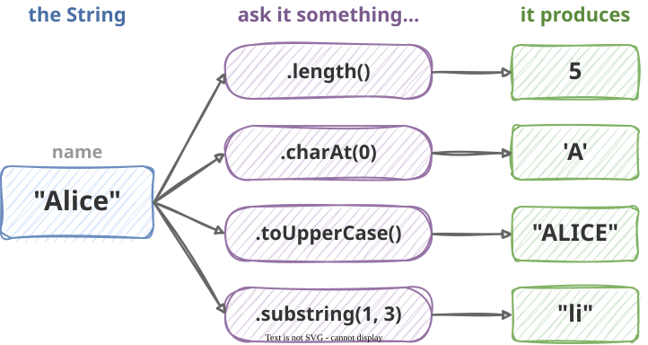
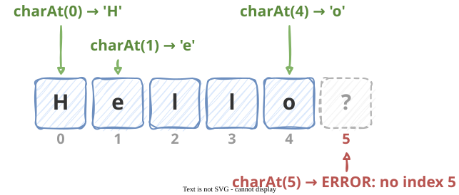
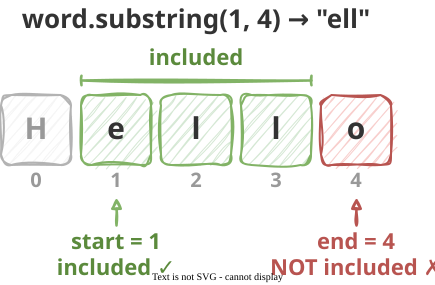
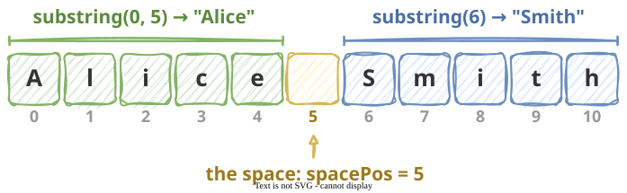
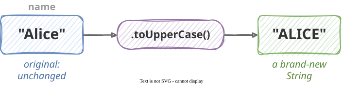
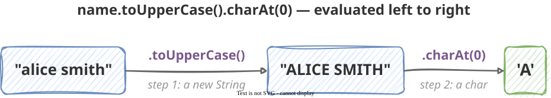

Describe a String as a sequence of characters and use zero-based index positions to locate individual characters
Use .length(), .charAt(), .substring(), .toUpperCase(), and .toLowerCase() to work with String values
Explain what String immutability means and predict the result of String operations
Chain String operations to perform multi-step text transformations
Explain why .equals() must be used to compare Strings and apply it correctly
What Is a String?
A String is a sequence of characters. Each character has a numbered position, its index, starting at zero.
String name ="Alice";

Rule: the last valid index is always length - 1, never length. Asking "Alice" for index 5 is an error.
Asking a String Things — The Dot
With numbers you use operators: score + 10, total / count. Strings work differently. To do something with a String, you write:
variableName.whatYouWantToDo(...)
The dot connects the String to the operation you want to perform.
String name ="Alice";name.length()// ask: how many characters are you?name.charAt(0)// ask: what is your character at index 0?name.toUpperCase()// ask: can you give me an uppercase version?name.substring(1,3)// ask: can you give me characters 1 through 2?
Think of it as asking a question directly to the String. The String produces an answer: a new value you can store, print, or use.

Note
The parentheses () are always required, even when nothing goes inside them. You will see why when we cover methods later in the course.
.length()
.length() asks the String how many characters it contains. Spaces and punctuation count.
String name ="Alice";String city ="Baltimore";String empty ="";String phrase ="Hello World";IO.println(name.length());// 5IO.println(city.length());// 9IO.println(empty.length());// 0IO.println(phrase.length());// 11 (the space counts!)
Warning
name.length() is 5, but the last index is 4. So name.charAt(name.length()) is an error.
Using .length() in a condition
The result of .length() is an int, so you can use it anywhere you would use a number, such as in a condition:
String password = IO.readln("Enter password: ");if(password.length()<8){ IO.println("Password is too short.");}else{ IO.println("Password length is OK.");}
Sample runs:
Enter password: cat123
Password is too short.
Enter password: purple-tiger
Password length is OK.
.charAt()
.charAt(i) asks the String for its character at index i.
String word ="Hello";IO.println(word.charAt(0));// HIO.println(word.charAt(1));// eIO.println(word.charAt(4));// o (last character)

A new type: char
The result of .charAt() is a single character. Java has a type just for that: char.
char first = word.charAt(0);// first holds 'H'IO.println(first);// H
Type
Quotes
Example
One character
char
single ' '
'H'
Any text (0 or more characters)
String
double " "
"Hello", "H", ""
Warning
word.charAt(word.length()) is always an error: index out of bounds. The last valid index is word.length() - 1.
Common uses: first and last character
String name = IO.readln("Enter your name: ");// Get the first letterchar initial = name.charAt(0);IO.println("Your initial is: "+ initial);// Get the last letter: index is length - 1char last = name.charAt(name.length()-1);IO.println("Last character: "+ last);
Sample run:
Enter your name: Maria
Your initial is: M
Last character: a
.substring()
.substring() asks the String for a piece of itself. It comes in two forms.
One argument: from that index to the end
String word ="Hello";IO.println(word.substring(2));// llo (index 2 to the end)IO.println(word.substring(0));// Hello (the whole thing)
Two arguments: from start up to, but not including, end
String word ="Hello";IO.println(word.substring(1,4));// ell (indexes 1, 2, 3 — not 4)IO.println(word.substring(0,3));// Hel (indexes 0, 1, 2 — not 3)
The end index is not included

Tip
Read substring(1, 4) as “start at 1, stop just before 4.” The number of characters you get is always end - start (here 4 - 1 = 3).
Example: splitting a full name
String full ="Alice Smith";int spacePos =5;// the space is at index 5String firstName = full.substring(0, spacePos);// "Alice"String lastName = full.substring(spacePos +1);// "Smith"IO.println(firstName);IO.println(lastName);

substring(0, spacePos) stops just before the space. substring(spacePos + 1) starts just after it.
.toUpperCase() and .toLowerCase()
.toUpperCase() produces an all-uppercase version of the String. .toLowerCase() produces an all-lowercase version.
String name ="Alice";IO.println(name.toUpperCase());// ALICEIO.println(name.toLowerCase());// aliceIO.println(name);// Alice ← unchanged!

The original String is not affected: you get a new value back. To use it later, store it:
String name ="Alice";String upper = name.toUpperCase();// store the resultIO.println(upper);// ALICEIO.println(name);// Alice — still the original
Practical use: ignoring capitalization in user input
String answer = IO.readln("Continue? (yes/no) ");// Works whether the user types "yes", "Yes", "YES", "yEs", ...if(answer.toLowerCase().equals("yes")){ IO.println("Continuing...");}
Strings Are Immutable
Immutable means: once created, a String cannot be changed. Every operation on a String produces a new String. It never alters the original.
String name ="alice";name.toUpperCase();// produces "ALICE", but where did it go?IO.println(name);// alice — name is still lowercase
name.toUpperCase() produced a value, but we did not store it anywhere, so it was thrown away immediately.
The fix: store the result
String name ="alice";String upper = name.toUpperCase();// store the new StringIO.println(name);// alice — original unchangedIO.println(upper);// ALICE — the new one
Tip
To replace the old value, store the result back: name = name.toUpperCase();. The variable now holds the new String.
Chaining String Operations
Since each String operation produces a new String, you can immediately ask that new String another question.
String name ="alice smith";// One step at a time:String upper = name.toUpperCase();// "ALICE SMITH"char first = upper.charAt(0);// 'A'// The same thing, chained into one expression:char initial = name.toUpperCase().charAt(0);// 'A'

More examples:
String word ="Hello, World!";// First 5 characters, lowercased:IO.println(word.substring(0,5).toLowerCase());// hello// Length of an uppercased version (same as the original length):IO.println(word.toUpperCase().length());// 13
To read a chain, work left to right. word.substring(0, 5) produces "Hello", then "Hello".toLowerCase() produces "hello".
Tip
Chaining is convenient, but keep it to two operations in a single expression. Longer chains are hard to read and hard to debug. Use a variable for each step instead.
Comparing Strings — .equals() Revisited
We covered this in the conditionals lecture. Always use .equals(), never ==, to compare Strings:
String answer = IO.readln("Type yes: ");
// ✗ unreliableif(answer =="yes"){ IO.println("You said yes.");}
// ✓ always correctif(answer.equals("yes")){ IO.println("You said yes.");}
Warning
== does not reliably compare String content. With typed-in input it usually gives false even when the text matches. The full explanation comes later in the course. For now: always use .equals() or .equalsIgnoreCase().
New: .equalsIgnoreCase()
.equalsIgnoreCase() compares two Strings without caring about upper or lower case.
It does the same job as answer.toLowerCase().equals("yes"), but it is shorter and clearer.
Expression
Result
"Yes".equals("yes")
false
"Yes".equalsIgnoreCase("yes")
true
"Yes".toLowerCase().equals("yes")
true
Code Example — Format a Name
Problem: Ask the user for their first name and last name. Print:
Their initials
Their full name in uppercase
The total number of characters in both names (not counting a space)
Sample run:
First name: Alice
Last name: Smith
Initials: A.S.
Uppercase: ALICE SMITH
Total characters: 10
Before the next slide, think: which String operation gives you each line of output?
voidmain(){String first = IO.readln("First name: ");String last = IO.readln("Last name: ");// Initials: the first character of each namechar firstInitial = first.charAt(0);char lastInitial = last.charAt(0); IO.println("Initials: "+ firstInitial +"."+ lastInitial +".");// Uppercase versions, used directly inside println IO.println("Uppercase: "+ first.toUpperCase()+" "+ last.toUpperCase());// Total characters (not counting the space between names)int total = first.length()+ last.length(); IO.println("Total characters: "+ total);}
Common Mistakes
1. Forgetting to store the result of a String operation
String name ="alice";name.toUpperCase();// ✗ result is produced and thrown awayIO.println(name);// still "alice"String upper = name.toUpperCase();// ✓ store itIO.println(upper);// ALICE
2. Using == instead of .equals()
String color = IO.readln("Favorite color: ");if(color =="blue"){...}// ✗ unreliableif(color.equals("blue")){...}// ✓
3. Off-by-one in .substring()
String word ="Hello";IO.println(word.substring(1,4));// ell — indexes 1, 2, 3IO.println(word.substring(1,5));// ello — indexes 1, 2, 3, 4// The second argument is the first index NOT included
4. Using .length() as an index
// ✗ ERROR: "Alice" has no index 5String name ="Alice";char last = name.charAt(5);
// ✓ length 5, so last index is 4String name ="Alice";char last = name.charAt(name.length()-1);
Worksheet
Problem 1 — Predict the output. Work through each line on paper before running it.
voidmain(){String s ="Programming"; IO.println(s.length()); IO.println(s.charAt(0)); IO.println(s.charAt(s.length()-1)); IO.println(s.substring(0,7)); IO.println(s.substring(7)); IO.println(s.toUpperCase()); IO.println(s.toLowerCase().charAt(3));}
Problem 2 — Trace the bug. What does this program actually print? What did the programmer expect? Fix it.
voidmain(){String name ="alice"; name.toUpperCase(); IO.println(name);// programmer expected "ALICE"}
Problem 3 — Write it. Ask the user for a word. Print:
Its length
Its first character
Its last character
All characters except the first (hint: use substring)
Java
Terminal
Problem 4 — Write it. Ask the user for their full name as a single String, e.g. "Alice Smith". Assume the first name is exactly 5 letters, so the space is always at index 5.
Print just the first name (the characters before index 5) and just the last name (the characters after index 5).
Java
Terminal
Problem 5 — Write it. Ask the user for a password. Print "Valid" if:
The password is at least 8 characters long, and
The password does not equal "password" (ignoring case)
Otherwise print "Invalid".
Java
Terminal
Problem 6 — Trace it. What does each line print? Work through it without running.
voidmain(){String a ="Hello";String b = a.substring(1,4);String c = b.toUpperCase(); IO.println(a); IO.println(b); IO.println(c); IO.println(a.length()+ b.length()); IO.println(c.charAt(0));}
![Two panels side by side. Left panel, titled '✗ Result not stored', shows the code name.toUpperCase();. A blue box labeled name holds "alice" (unchanged). An arrow labeled .toUpperCase() leads to a faded, dashed box holding "ALICE" labeled '(no variable)', captioned 'produced, then thrown away'. Right panel, titled '✓ Result stored', shows the code String upper = name.toUpperCase();. The name box still holds "alice" (unchanged), and the arrow leads to a green box labeled upper holding "ALICE", captioned 'kept, ready to use'.](diags/07-immutable.svg)